Taller Windows 7
Internet
Configurar internet en un equipo Windows 7
Apreta la tecla → para avanzar.


Internet es un conjunto descentralizado de redes de comunicación interconectadas que utilizan la familia de protocolos TCP/IP, garantizando que las redes físicas heterogéneas que la componen funcionen como una red lógica única, de alcance mundial.


Existen diferentes tecnologías de acceso a la red de redes, de las cuales vamos a nombrar las más utilizadas para conectar nuestra recinto (o nuestra casa) a internet.
 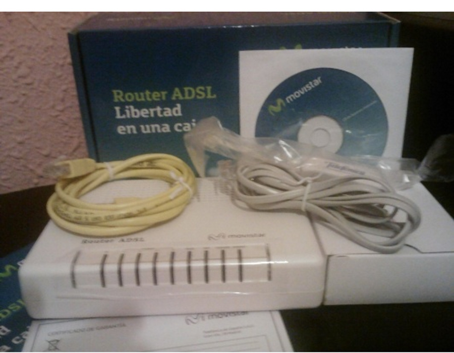
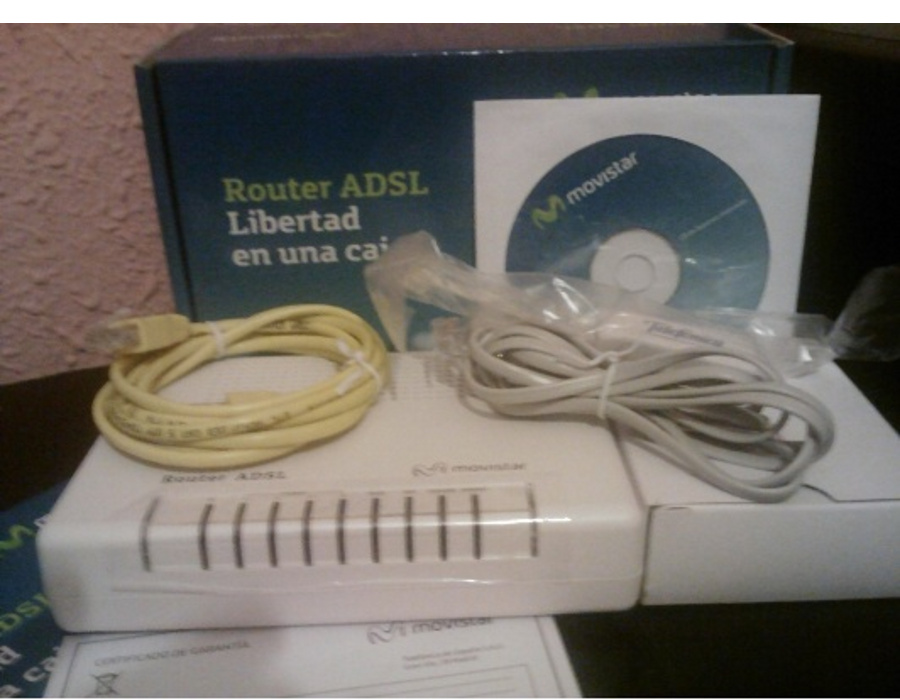

Cambia de foto con las teclas: ↑ y ↓

Para conectar el ordenador a la red, tenemos dos tecnologías principales que seguro que conocéis:

Cambia de foto con las teclas: ↑ y ↓

Aunque la labor de instalación de la red os recomiendo que la realice un profesional, sí que hay cierta configuración de red que podemos gestionar nosotros con Windows 7.
Os voy a enseñar algunos trucos de diagnóstico y gestión de red, que os pueden servir para saber cómo conectar o qué está pasando con vuestra conexión.

Podemos determinar el estado de la red mediante la información que se nos muestra en el área de notificaciones.
Los iconos que vemos en la barra de estado nos indican el estado actual de la conexión de nuestro equipo. Veámoslos:
 Estamos conectados a la red inalámbrica, pero Internet no está disponible.
Estamos conectados a la red inalámbrica, pero Internet no está disponible. Conectados con poca calidad de señal.
Conectados con poca calidad de señal. 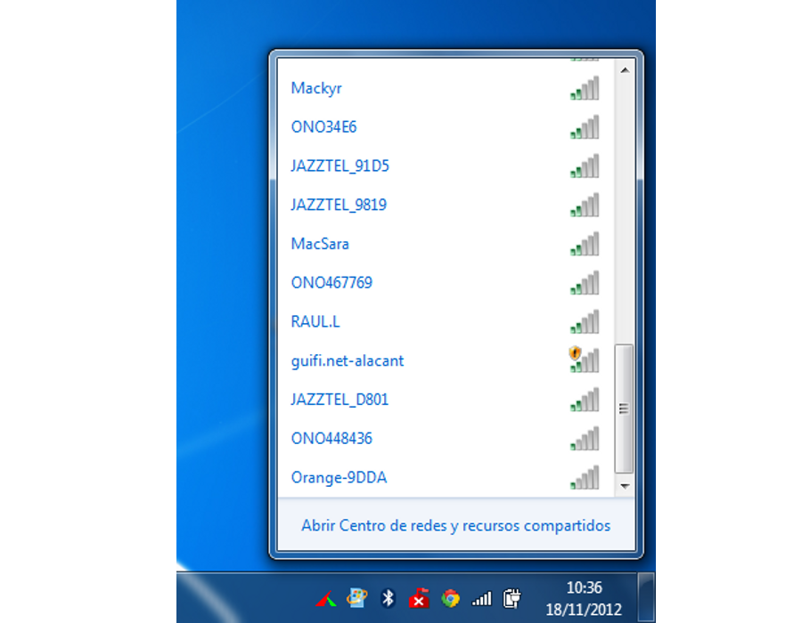
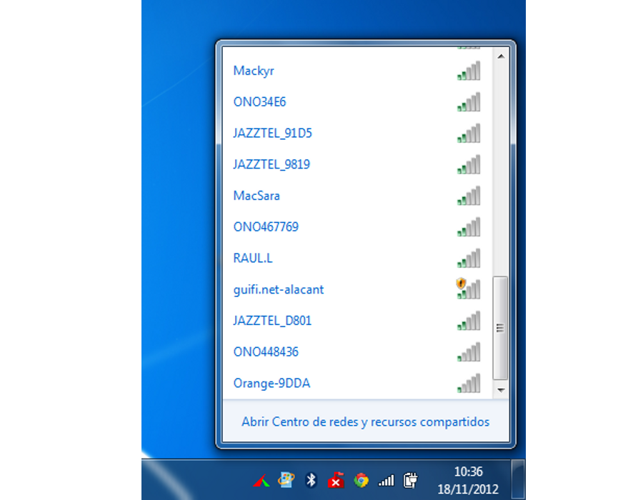
 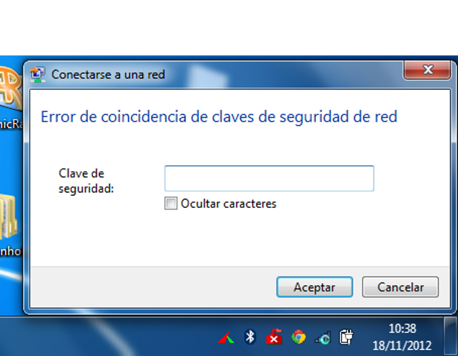
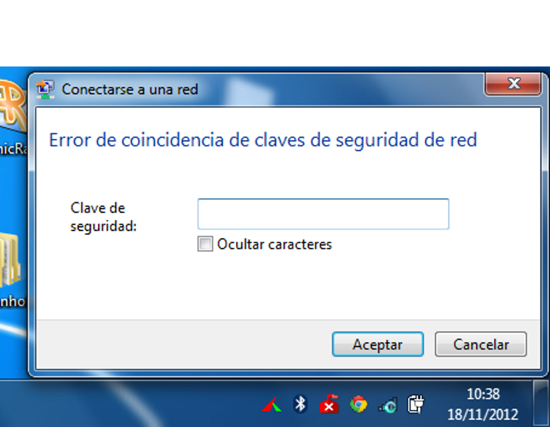


Cambia de foto con las teclas: ↑ y ↓
Si utilizamos una conexión a internet mediante cable, el icono informativo de la barra de tareas es diferente. A través de cable es mucho más simple conocer el estado de la conexión.

 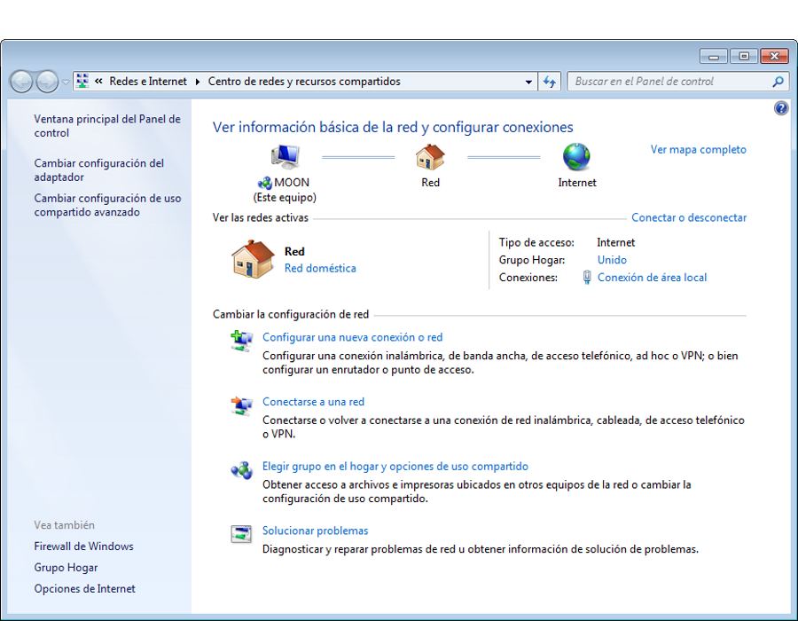
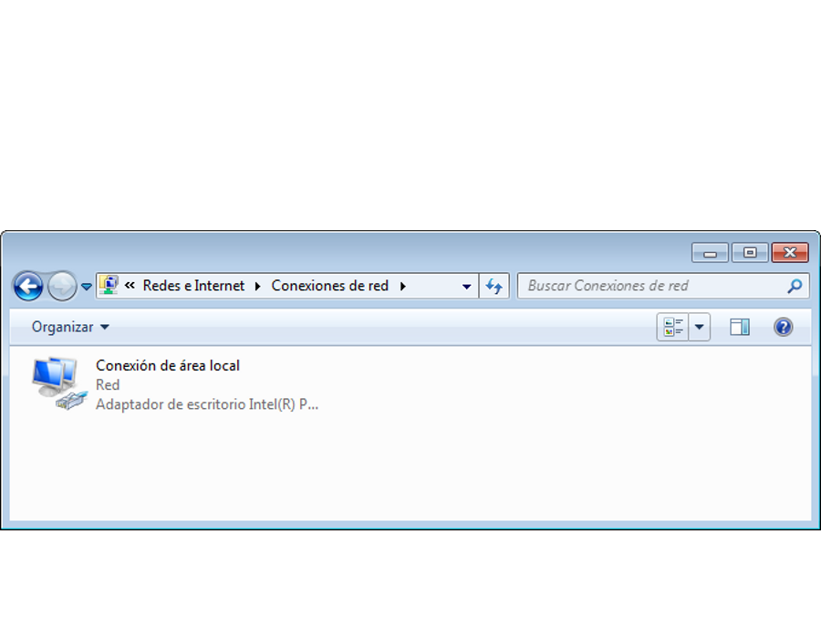
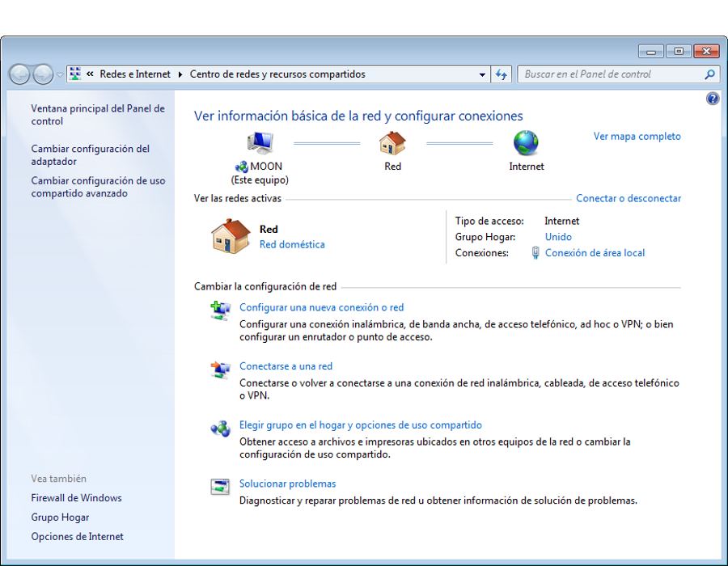
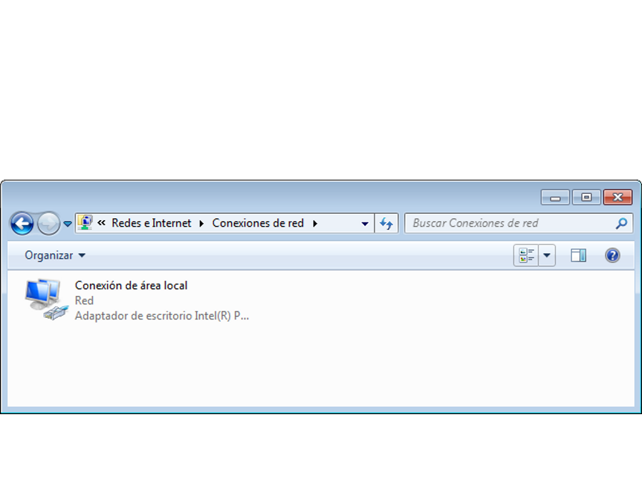
 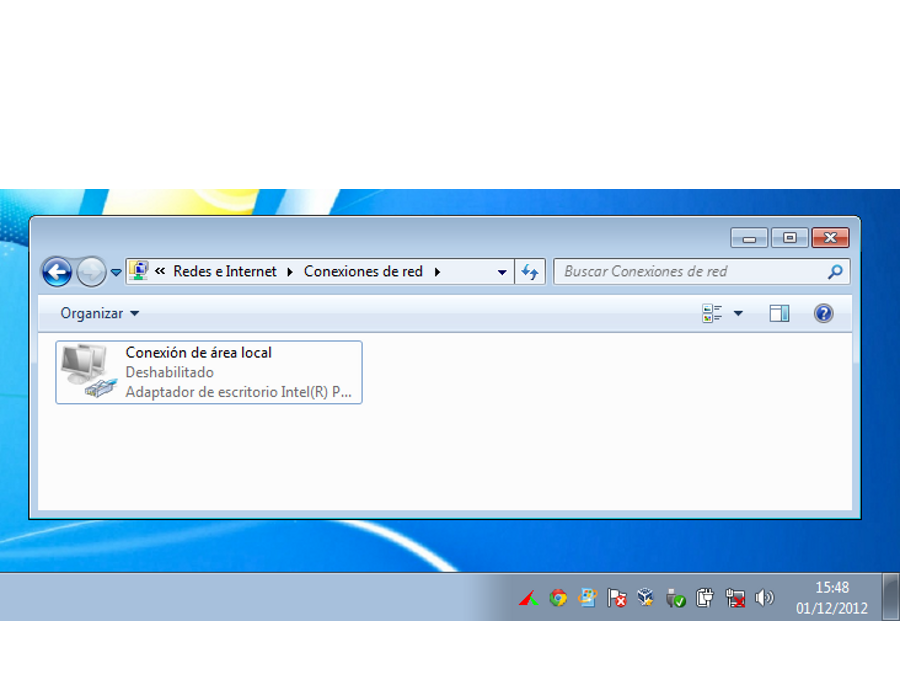
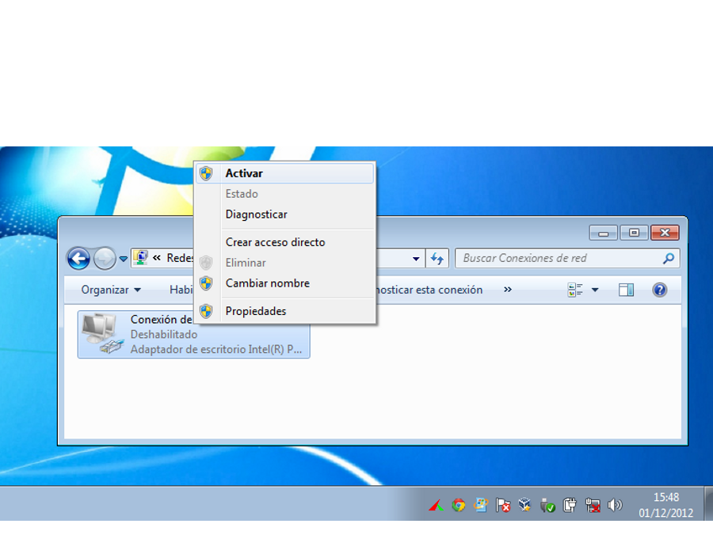
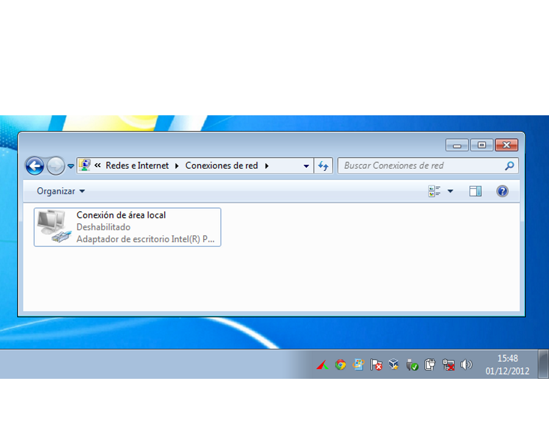
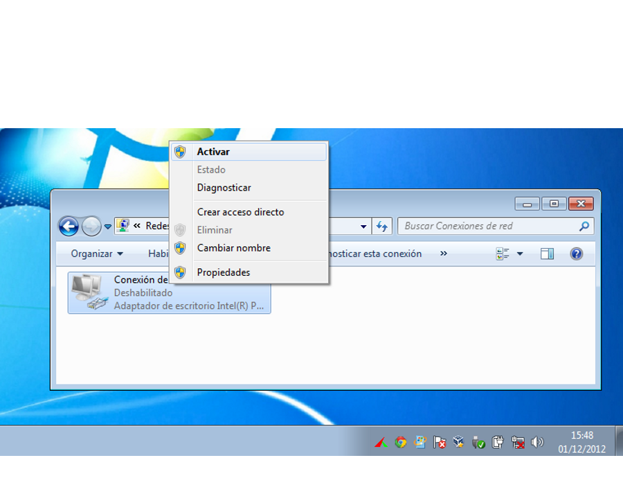
Cambia de foto con las teclas: ↑ y ↓
Veamos ahora algunos trucos que nos permitirán diagnosticar problemas de red en la conexión de un equipo.
Si una página no nos funciona en el navegador, puede deberse a tres causas. Recordemos que una página está formada por un dominio y un recurso (http://mayores.uji.es/blogs)
Cambia de foto con las teclas: ↑ y ↓